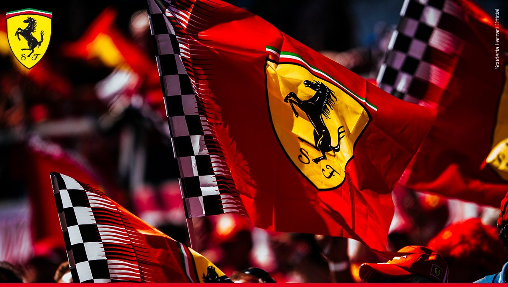

🏁 Ferrari – História e Legado
A Ferrari é uma das mais prestigiadas fabricantes de automóveis esportivos de luxo e alto desempenho do mundo. Sediada em Maranello, na Itália, a empresa é conhecida por sua excelência em engenharia, design e performance. Além dos carros de rua, a Ferrari é mundialmente reconhecida por sua atuação histórica na Fórmula 1.
🏎️ História
A Ferrari foi fundada em 1939 por Enzo Ferrari, inicialmente sob o nome Auto Avio Costruzioni, após sua saída da Alfa Romeo. O primeiro carro com o nome Ferrari, o 125 S, foi lançado em 1947, equipado com um motor V12. Durante a Segunda Guerra Mundial, a fábrica foi transferida de Modena para Maranello, onde permanece até hoje. Enzo Ferrari sempre colocou as competições como prioridade, financiando as atividades da equipe de corrida por meio da venda de carros esportivos.
Durante a Segunda Guerra Mundial, a fábrica foi transferida de Modena para Maranello, onde permanece até hoje como o coração da empresa. Apesar dos desafios da época, Enzo Ferrari manteve seu foco no automobilismo, acreditando que as pistas eram o laboratório ideal para desenvolver tecnologias que mais tarde seriam aplicadas nos carros de rua.
🏆 Scuderia Ferrari na Fórmula 1
A Scuderia Ferrari é o braço esportivo da empresa e a equipe mais antiga e vitoriosa da Fórmula 1, presente desde sua primeira temporada em 1950. A equipe conquistou diversos títulos de construtores e pilotos, com lendas como:
- Títulos de construtores da Ferrari: 1961, 1964, 1975, 1976, 1977,
1979, 1982, 1983, 1999, 2000, 2001, 2002, 2003, 2004, 2007, 2008 - Kimi Räikkönen (2007)
- Michael Schumacher (1999-2004)
- Jody Scheckter (1979)
- Niki Lauda (1975, 1977)
- John Surtees (1964)
- Phil Hill (1961)
- Mike Hawthorn (1958)
- Juan Manuel Fangio (1956)
- Alberto Ascari (1952, 1953)
🚗 Modelos Famosos da Ferrari
A Ferrari produziu diversos modelos lendários que marcaram a história do automobilismo e da indústria automotiva. Alguns deles incluem:
- Ferrari 250 GTO (1962): Um dos carros mais valiosos e desejados do mundo.
- Ferrari F40 (1987): Desenvolvido para celebrar os 40 anos da marca.
- Ferrari Enzo (2002): Em homenagem ao fundador.
- Ferrari LaFerrari (2013): Híbrido que une potência e tecnologia.
- Ferrari F80 (2024): o novo supercarro da Ferrari, é o modelo de rua mais potente já produzido pela marca
📈 Presença Global e Propriedade
A Ferrari é uma marca com presença mundial, reconhecida por seu padrão de luxo, desempenho e exclusividade. Desde 2016, é uma empresa independente, após se separar oficialmente da Fiat Chrysler Automobiles. Suas ações são negociadas nas bolsas de valores de Nova York (NYSE) e Milão (Borsa Italiana). Apesar da produção limitada, a Ferrari mantém uma forte demanda global, principalmente entre colecionadores e entusiastas.
❤️ Símbolos e Cultura
O símbolo do cavalo rampante (Cavallino Rampante) foi inspirado em um emblema pintado em um avião de guerra italiano. A cor vermelha (Rosso Corsa) é a mais associada à marca, por tradição nas corridas italianas.
